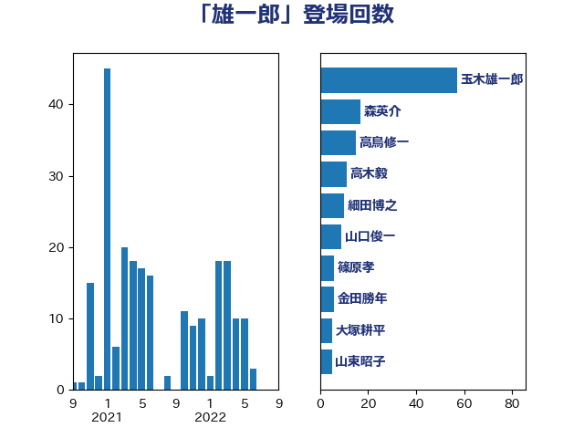

単語「雄一郎」

| 玉木雄一郎 | 国民民主党 | 57 回 |
| 森英介 | 自由民主党 | 17 回 |
| 高鳥修一 | 自由民主党 | 15 回 |
| 高木毅 | 自由民主党 | 11 回 |
| 細田博之 | 自由民主党 | 10 回 |
| 山口俊一 | 自由民主党 | 9 回 |
| 篠原孝 | 立憲民主党 | 6 回 |
| 金田勝年 | 自由民主党 | 6 回 |
| 大塚耕平 | 国民民主党 | 5 回 |
| 山東昭子 | 自由民主党 | 5 回 |
| 足立康史 | 日本維新の会 | 5 回 |
| 岸田文雄 | 自由民主党 | 4 回 |
| 根本匠 | 自由民主党 | 4 回 |
| 海江田万里 | 立憲民主党 | 4 回 |
| 菅義偉 | 自由民主党 | 4 回 |
| 田名部匡代 | 立憲民主党 | 3 回 |
| 尾辻秀久 | 無所属 | 2 回 |
| 杉尾秀哉 | 立憲民主党 | 2 回 |
| 村井英樹 | 自由民主党 | 2 回 |
| 水岡俊一 | 立憲民主党 | 2 回 |
| 熊谷裕人 | 立憲民主党 | 2 回 |
| 石原宏高 | 自由民主党 | 2 回 |
| 羽田次郎 | 立憲民主党 | 2 回 |
| 長峯誠 | 自由民主党 | 2 回 |
| あかま二郎 | 自由民主党 | 1 回 |
| 下条みつ | 立憲民主党 | 1 回 |
| 伊藤孝恵 | 国民民主党 | 1 回 |
| 吉田統彦 | 立憲民主党 | 1 回 |
| 小池晃 | 日本共産党 | 1 回 |
| 小沢雅仁 | 立憲民主党 | 1 回 |
| 山口那津男 | 公明党 | 1 回 |
| 徳永エリ | 立憲民主党 | 1 回 |
| 打越さく良 | 立憲民主党 | 1 回 |
| 木原誠二 | 自由民主党 | 1 回 |
| 本田顕子 | 自由民主党 | 1 回 |
| 枝野幸男 | 立憲民主党 | 1 回 |
| 榛葉賀津也 | 国民民主党 | 1 回 |
| 武見敬三 | 自由民主党 | 1 回 |
| 渡辺猛之 | 自由民主党 | 1 回 |
| 福山哲郎 | 立憲民主党 | 1 回 |
| 秋野公造 | 公明党 | 1 回 |
| 舩後靖彦 | れいわ新選組 | 1 回 |
| 茂木敏充 | 自由民主党 | 1 回 |
| 蓮舫 | 立憲民主党 | 1 回 |
| 藤川政人 | 自由民主党 | 1 回 |
| 西岡秀子 | 国民民主党 | 1 回 |
| 西村康稔 | 自由民主党 | 1 回 |
| 足立敏之 | 自由民主党 | 1 回 |
| 道下大樹 | 立憲民主党 | 1 回 |
| 野田国義 | 立憲民主党 | 1 回 |
| 馬場伸幸 | 日本維新の会 | 1 回 |
| 高階恵美子 | 自由民主党 | 1 回 |